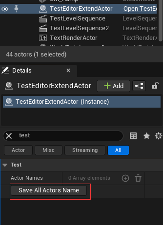

# 一、CallInEditor
- 虚幻 5 的介绍：
- This function can be called in the editor on selected instances via a button in the details panel.
- 意思就是：函数通过使用 UFUNCTION (CallInEditor , Category="Test")，可以在编辑器的细节面板增加一个按钮，然后点击这个按钮就会调用该函数。
- 用法：创建一个新 Actor，并把下面代码加入进去，然后将 Actor 拖入到场景。
- ATestEditorExtendActor.h
UFUNCTION(CallInEditor, Category = "Test") void SaveAllActorsName(); /// 当前编辑器world所有Actor的名字 UPROPERTY(VisibleInstanceOnly, Category = "Test", DisplayName = "Actor Names") TArray<FString> m_astrCurrWorldActorNames; - ATestEditorExtendActor.cpp
void ATestEditorExtendActor::SaveAllActorsName() { /// 获取当前编辑器打开的World（不是游戏运行时的World） UWorld* pCurEditorWorld = nullptr; const TIndirectArray<FWorldContext>& aWorldContext = GEngine->GetWorldContexts(); for (auto& worldContext : aWorldContext) { UWorld* pWorld = worldContext.World(); if (pWorld && pWorld->WorldType == EWorldType::Editor) { pCurEditorWorld = pWorld; } } if (!pCurEditorWorld) { UE_LOG(LogTemp, Error, TEXT("Editor world is null!")); return; } /// 对当前World（关卡）做一些编辑器相关的操作 /// 比如：可以相关Actor，动态生成一些编辑器数据，并序列化保存下来 ///... m_astrCurrWorldActorNames.Empty(); for (TActorIterator<AActor> ActorIter(pCurEditorWorld); ActorIter; ++ActorIter) { AActor* pActor = *ActorIter; if (!pActor) { continue; } m_astrCurrWorldActorNames.Add(pActor->GetActorLabel()); } } - Actor 加入场景后的效果如下，点击这个按钮就会保存当前关卡所有 Actor 到数组 m_astrCurrWorldActorNames 里面。

- ATestEditorExtendActor.h
# 二、UObject 相关的接口
- UObject::PreSave 函数。
- 当 UObject 对象及其派生类（包括蓝图）保存时，会调用该函数。
- UObject 子类可以覆盖该虚函数，在对象保存时做一些编辑器扩展！（例如：编辑器下通过该函数，动态生成一些该对象的数据结构，加入合适的 UPROPERTY（EditAnywhere、VisibleAnywhere 等）就可以将数据序列化下来）
/** * Presave function. Gets called once before an object gets serialized for saving. This function is necessary * for save time computation as Serialize gets called three times per object from within SavePackage. * * @warning: Objects created from within PreSave will NOT have PreSave called on them!!! */ virtual void PreSave(FObjectPreSaveContext SaveContext); void UObject::PreSave(FObjectPreSaveContext SaveContext) { SaveContext.Data.bBaseClassCalled = true; #if WITH_EDITOR PRAGMA_DISABLE_DEPRECATION_WARNINGS FCoreUObjectDelegates::OnObjectSaved.Broadcast(this); PRAGMA_ENABLE_DEPRECATION_WARNINGS FCoreUObjectDelegates::OnObjectPreSave.Broadcast(this, SaveContext); #endif }
- UObject::Modify 函数。
- 当 UObject 的子类对象的数据改变时，需要将改动记录到 transaction buffer (undo/redo) 就会调用该函数。
- 说人话就是：当蓝图属性发生改变时就会调用该函数。例如：修改了某个数值，勾选了某个按钮都会调用 Modify 函数。
- 需要注意的是该函数好像会调用多次！
/** * Note that the object will be modified. If we are currently recording into the * transaction buffer (undo/redo), save a copy of this object into the buffer and * marks the package as needing to be saved. * * @param bAlwaysMarkDirty if true, marks the package dirty even if we aren't * currently recording an active undo/redo transaction * @return true if the object was saved to the transaction buffer */ #if WITH_EDITOR virtual bool Modify( bool bAlwaysMarkDirty=true ); /** Utility to allow overrides of Modify to avoid doing work if this object cannot be safely modified */ bool CanModify() const; #endif
- UObject::PostLoad 函数。
- 当对象在 Load 完成后调用。
- 例如：编辑器打开时加载资源；右键蓝图资源 ===>Asset Actions===>Reload。
/** * Do any object-specific cleanup required immediately after loading an object. * This is not called for newly-created objects, and by default will always execute on the game thread. */ virtual void PostLoad();
- UObject 对象中还有很多编辑器扩展可以使用的虚函数，有兴趣的可以自行查看源码（太多了列举不完！）。
/** * This is called when a property is about to be modified externally * * @param PropertyThatWillChange Property that will be changed */ virtual void PreEditChange(FProperty* PropertyAboutToChange); /** * Called by the editor to query whether a property of this object is allowed to be modified. * The property editor uses this to disable controls for properties that should not be changed. * When overriding this function you should always call the parent implementation first. * * @param InProperty The property to query * * @return true if the property can be modified in the editor, otherwise false */ virtual bool CanEditChange( const FProperty* InProperty ) const; /** * Intentionally non-virtual as it calls the FPropertyChangedEvent version */ void PostEditChange(); /** Called before applying a transaction to the object. Default implementation simply calls PreEditChange. */ virtual void PreEditUndo(); /** Called after applying a transaction to the object. Default implementation simply calls PostEditChange. */ virtual void PostEditUndo(); /** Called at the end of Rename(), but only if the rename was actually carried out */ virtual void PostRename(UObject* OldOuter, const FName OldName) {} /** * Called before duplication. * * @param DupParams the full parameters the object will be duplicated with. * Allows access to modify params such as the duplication seed for example for pre-filling the dup-source => dup-target map used by StaticDuplicateObject. * @see FObjectDuplicationParameters */ virtual void PreDuplicate(FObjectDuplicationParameters& DupParams) {}
# 三、编辑器命令
- 注册编辑器命令来扩展一些简单的功能。示例代码如下：
static void TestEditorCommand(UWorld* pWorld) { if ( !pWorld || pWorld->WorldType != EWorldType::Editor ) { return; } ///do something } /// 自动注册控制台命令 FAutoConsoleCommandWithWorld g_TestAutoCom( TEXT( "TestAutoCommand" ), TEXT( "Test Command Of Editor" ), FConsoleCommandWithWorldDelegate::CreateStatic( TestEditorCommand ) ); - 除了 FAutoConsoleCommandWithWorld，还有其它控制台命令：FAutoConsoleCommand、FAutoConsoleCommandWithWorldAndArgs、FAutoConsoleCommandWithOutputDevice、FAutoConsoleCommandWithWorldArgsAndOutputDevice。
- 这些自动控制台命令都定义在 IConsoleManager.h 里面，有兴趣的的可以自行去查看源码！
# 四、Editor Utilities
# 1. 创建 Editor Utilities
- 创建编辑器工具：右键 =》EditorUtilities
# 2. Editor Utility Widget
- 简单实用，这玩意简直是编辑器扩展的福音！减少开发者创建插件扩展编辑器和书写 Slate 构建编辑器扩展的 UI，直接使用 UserWidget 可视化界面构建 UI，真的是太棒了！
- 试一试：其实就跟正常的游戏 UI 的 Widget 大同小异！
- 创建：创建 EditorUtilityWidget =》双击打开 =》创建一个按钮 =》点击按钮后输出信息
- 使用：右键 EditorUtilityWidget =》点击 RunEditorUtilityWidget =》里面就是你构建的 UI =》 点击按钮 =》 输出信息 =》测试成功！
# 3. Editor Utility Blueprint
- 这个编辑器扩展功能，目前感觉功能不全，可能还没开发完成！有兴趣的可以自行尝试。
# 五、结语
虚幻引擎提供的编辑器扩展插件是真的好用，但也泛滥成灾了！
一些简单的功能（可能需要为某类 Actor 写个编辑器函数、也可能就遍历关卡中的 Actor 做一些简单操作），
或者一些跟项目某个管理类关系很紧密的编辑器扩展，我想这些功能不需要去单独创建一个复杂的插件，
令项目插件越积越多（写插件的人使用完后不关闭插件、不归类或不去除工具栏按钮，让人烦厌的是这些插件会把我的 “Play” 等按钮挤到很远的地方！）！
合理使用上面的编辑器扩展方法，可能会使项目更加简洁明了。更进一步的编辑器扩展，请查看 UE5 编辑器扩展（进阶篇）